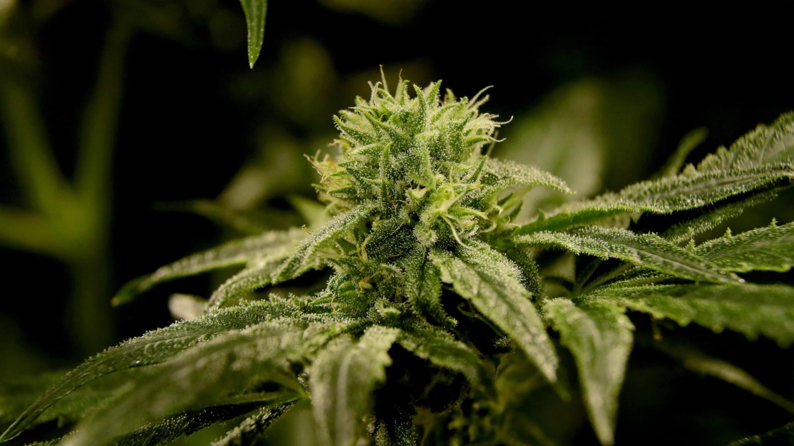
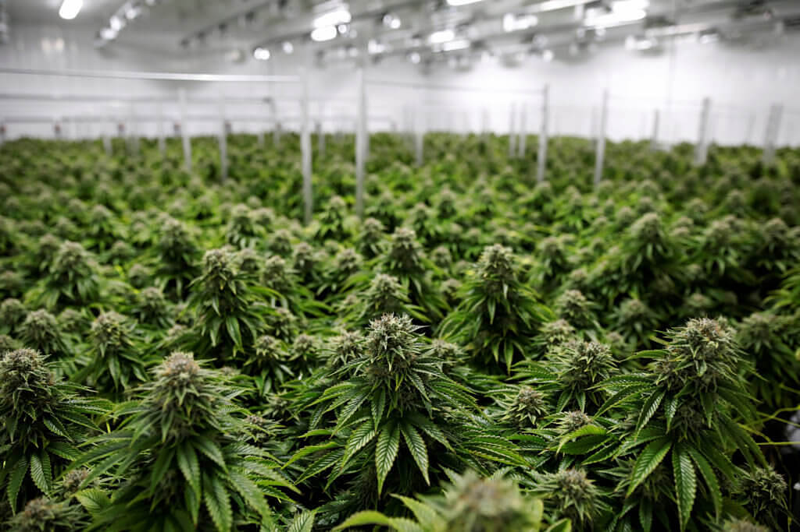

Historia
De tidigaste beläggen för odling av cannabis är 10 000 år gamla från nuvarande Taiwan utanför Kinas kust. Där har man funnit lerskärvor dekorerade med avtryck av flätade hampfibrer tillsammans med rester av verktyg som förmodligen användes för att skära loss fibrerna ur växtens stam. Fibrerna har använts till rep, tyg, segelduk och skor. Kineserna upptäckte tidigt att cannabis hade separata hanplantor och honplantor. Hanplantorna gav starkare fibrer. Så starka att man till och med kunde använda dem som bågsträngar. Honplantorna gav bättre frön ur vilka man kunde utvinna olja till matlagning, fågelfrö och desinficerande medel. Växten var så viktig att det forntida Kina kallades för “landet av mullbär och hampa” (mullbär är silkesmaskarnas föda).
Vad är det?
Cannabis används som ett samlingsnamn för bl a marijuana, hasch och hascholja. Dessa kommer från en hampväxt som heter Cannabis Sativa. Växten innehåller hundratals kemiska substanser, varav 60-80 är psykoaktiva och påverkar psyket. En av cannabinoiderna förkortas THC (delta-9 tetrahydrocannabinol) som ger ett rus. Halten THC används ofta som ett mått på styrkan i cannabis. De vanligaste formerna av cannabis i Sverige är hasch och marijuana. Hasch framställs av den kåda som utsöndras av hampans körtelhår och som pressas samman till kakor. Hasch säljs i småbitar och färgen varierar från ljust brunt till nästan svart. Marijuana är växtens torkade blomställningar och toppskott, ibland också blad och delar av stammen. Den liknar torkat, hackat gräs eller örtkryddor. Cannabisolja (cannabisextrakt) är en tjockflytande vätska som varierar i färg från brunt till nästan svart. Hasch och marijuana röks vanligen i handrullade cigarretter eller i speciella pipor. Cannabisolja doseras i minimala mängder i tobak eller på cigarrettpapper. Cannabispreparaten kan också sväljas, utblandade i mat eller dryck. De är inte lösliga i vatten och kan därför inte injiceras. Olika sorters cannabis innehåller en varierande procentuell sammansättning av de olika cannabinoiderna vilket påverkar hur de verkar i kropp och psyke och är därmed en av flera faktorer som har inverkan på hur ruset upplevs. Dagens cannabis, framför allt marijuanan, kan innehålla betydligt mer THC än tidigare. Det innebär inte att dagens cannabis alltid är starkare då den även kan innehålla andra sorters cannabinoider som dämpar vissa effekter av THC. THC-halten ligger vanligen på 8-15 %. Cannabis är fettlösligt vilket gör att det stannar kvar länge i kroppen, upp till sex veckor om det röks regelbundet. Det THC som man får i sig lagras i kroppens fettvävnader, som det t.ex. finns mycket av i hjärnan och i kroppens inälvor. Halveringstiden för THC i kroppen är ca 6 dagar.
 Hur man gör
Som många vet är det vanligast att bruka cannabis genom att röka det. Det gör oftast med rullpaper och filter som går att köpa i de flesta tobaksbutiker. Ofta behövs även en grinder för att finmala cannabisen men det brukar funka med sax också. Den här videon beskriver snabbt och enkelt hur man gör för att få en fin jolle men tyvärr så är den åldersbegränsad 😔
Go Home